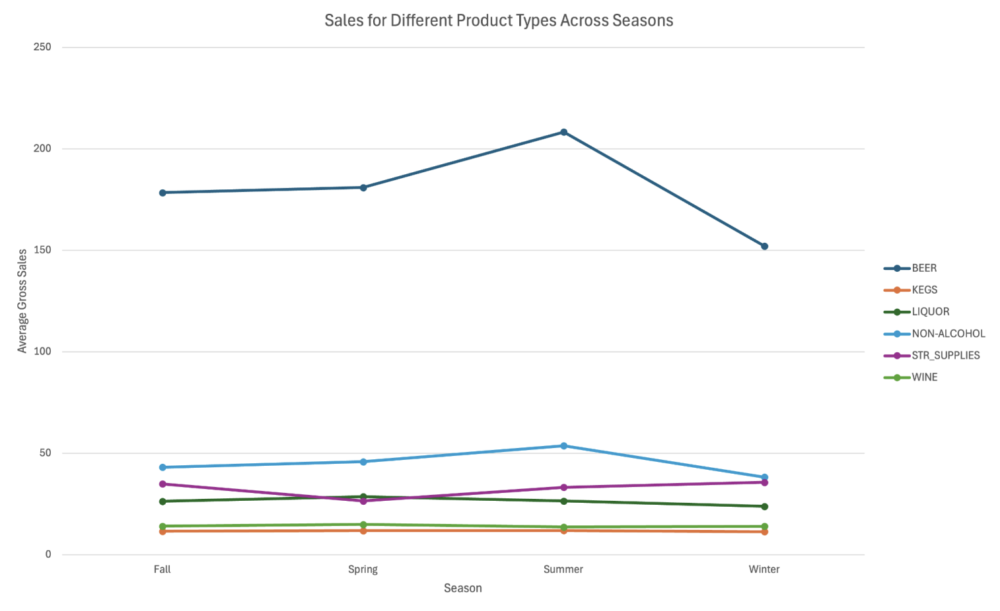

For my Sales Performance Analysis project, I worked with a team of three students to explore and analyze Montgomery County alcohol sales data. Our main goal was to generate actionable insights that could inform inventory management and marketing strategies. To achieve this, we first designed a MySQL database to store and organize the data efficiently. Then, using Python with Pandas and NumPy, I wrote a program to extract, clean, and load the sales data, addressing issues such as missing entries and inconsistent formatting. Once the data was properly prepared, I wrote SQL queries to identify top-selling products, evaluate supplier performance, and analyze seasonal sales trends. This process allowed me to apply data analytics techniques in a practical, real-world context and understand how structured data analysis can drive business decisions. Throughout the project, I collaborated closely with my teammates, discussing findings and iterating on our approach to ensure the results were accurate and meaningful. In the end, we delivered data-driven recommendations on revenue distribution and supplier rankings, which could support strategic business planning and enhance supply chain efficiency. This project not only strengthened my technical skills in SQL and Python but also improved my ability to communicate analytical insights effectively and work collaboratively to solve complex problems.
